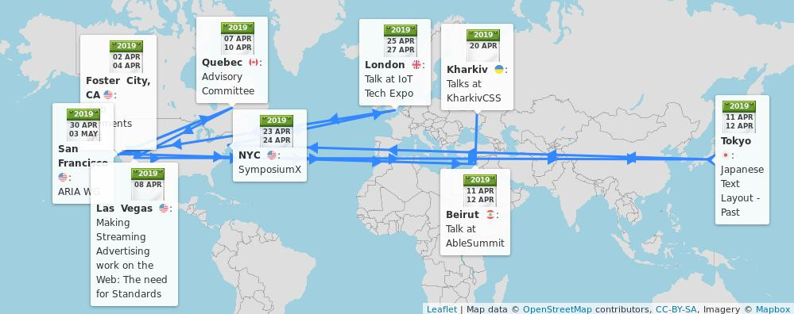
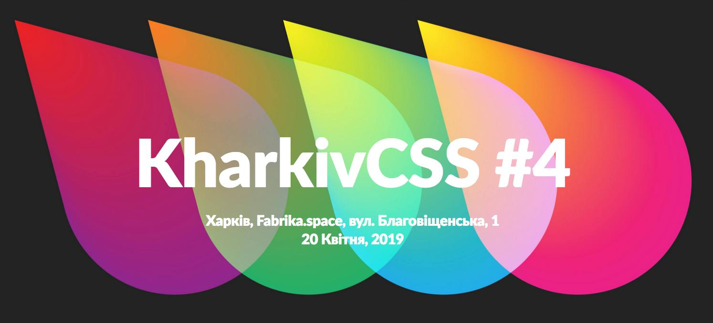
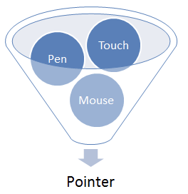

🗓️ April@w3c: #WorkingGroup meetings, talks, SymposiumX, etc. https://www.w3.org/participate/eventscal.html
2-3 April: Hosted by @Visa, the @w3payments #WorkingGroup meets in #FosterCity 🇺🇸 to discuss next features for the Payment Request #API and more... https://github.com/w3c/webpayments/wiki/FTF-Agenda-201904 #Payments
https://twitter.com/w3cdevs/status/11126748557936394277-9 April: @w3c convenes its member representatives and staff to a 2-day #f2fmeeting in #Quebec, 🇨🇦 #quebeccongres
https://twitter.com/w3cdevs/status/11126748606925742098 April: @JalanbirdW3C presents the need for #WebStandards to make stream advertising work on the #Web @NABShow in #LasVegas 🇺🇸 https://www.nabshow.com/
https://twitter.com/NABShow/status/1110315546577461255
https://twitter.com/w3cdevs/status/111267485875904512120 April: @svgeesus and @LeaVerou present all things incl. secrets related to #SVG, #CSS, and #WebStandards in general @KharkivCSS in #Kharkiv, 🇺🇦 http://kharkivcss.org/
https://twitter.com/w3cdevs/status/111267486453463859211-12 April: @sabouzah speaks @ablesummit in #Beirut 🇱🇧, https://sites.aub.edu.lb/able/ #accessibility #a11y
https://twitter.com/ablesummit/status/1091850986593898496
https://twitter.com/w3cdevs/status/111267486314206412811 April: JEPA and @w3c'>@w3c organize an event to share information about gaps and requirements for support of Japanese on the Web and in eBooks, in #Tokyo, 🇯🇵 https://kokucheese.com/event/index/558596/ The @w3c'>@w3c's Japanese Layout Task Force organizes a kick-off meeting too: https://w3c.github.io/jlreq/charter/ #i18n
https://twitter.com/w3cdevs/status/111267486185867673626 April: @draggett presents Open markets of #IoT services and the emergence of the Sentient #Web https://www.iottechexpo.com/global/talk/iot-innovation-security-for-iot-devices/ @iottechexpo, in #London 🇬🇧
https://twitter.com/w3cdevs/status/111267486851081421023 April: @RachelYager of @FortuneTimesNYC and @w3c organize SYMPOSIUMX dedicated to Financial Innovation on the Web, in #NYC, 🇺🇸 Register now! https://www.eventbrite.com/e/symposiumx-financial-innovation-on-the-web-tickets-55839800346 #Security #Payments #Privacy #Identity
https://twitter.com/w3cdevs/status/111267486675755417630 April-2 May: Hosted by @levelaccessa11y, the @w3c #WAI_ARIA #WorkingGroup meets f2f in #SanFrancisco 🇺🇸 to discuss
#WAI_ARIA role parity https://www.w3.org/WAI/ARIA/wiki/Meetings/F2F_Spring_2019 #accessibility #a11y
https://twitter.com/w3cdevs/status/1112674870809235458最近公開された @w3c Pointer Events — Level 2 #WebStandard は日本語に翻訳されています : https://triple-underscore.github.io/pointerevents-ja.html
どうもありがとう @strontium91 ! ＃html5j #w3c_keio
Thanks to @strontium91, the recently published @w3c Pointer Events — Level 2 #WebStandard has been translated into Japanese: https://triple-underscore.github.io/pointerevents-ja.html #html5j #w3c_keio https://twitter.com/w3c/status/1115600989321551873
https://twitter.com/w3cdevs/status/111809822921481011224 April: opening a new session of @w3cx JavaScript Introduction #MOOC https://www.edx.org/course/javascript-introduction-2 @edXOnline @uca_education @micbuffa #javascript
https://twitter.com/w3cdevs/status/1118121634769117186Deadline for expressions of interest is today! "Expressions of interest should briefly explain the participant's interest in the workshop in a few sentences". See more on how to participate: https://www.w3.org/WoT/ws-2019/participation.html https://twitter.com/w3c/status/1111319577697402881
https://twitter.com/w3cdevs/status/1120675424135262209The spring edition of the #roadmap of #WebApps on mobile is out! It highlights new exploratory work of the @w3c @wicg_ group https://www.w3.org/2019/04/web-roadmaps/mobile/ #April2019 thanks to @tidoust @XueFuqiao @W3CChina @Beihang1952
For example, KV Storage, a simple async key-value #storage #API, which integrates with #IndexedDB, is proposed as a modern successor to localStorage to improve Web #performance
https://www.w3.org/2019/04/web-roadmaps/mobile/storage.html#kv-storage
https://twitter.com/w3cdevs/status/1120995019257733122Finally, the @csswg has started to work on the Resize Observer specification which describes an #API for observing changes to Element’s size. This helps solve the Element Queries problem in a responsive context
https://www.w3.org/2019/04/web-roadmaps/mobile/adaptation.html#resize-observer
https://twitter.com/w3cdevs/status/1120997214527135744Then, in order to strengthen #security, Trusted Types allows applications to lock down DOM-based XSS injection sinks (e.g. Element.innerHTML, or Location.href setters) to only accept non-spoofable, typed values in place of strings https://www.w3.org/2019/04/web-roadmaps/mobile/security.html#trusted-types
https://twitter.com/w3cdevs/status/1120997212987719680Check out for more #Web technologies developed in @w3c that increase the capabilities of #Webapps, how they apply more specifically to the mobile context and what are their current implementations: https://www.w3.org/Mobile/roadmap/
https://twitter.com/w3cdevs/status/1120997216158662656The Conversational Interfaces Community Group focuses more specifically on how to model a dialogue and its expected outcomes https://www.w3.org/community/conv/
https://twitter.com/w3cdevs/status/1121315198210584576The Voice Assistant Community Group is exploring the general space of standardization needs for voice-based assistants https://www.w3.org/community/voice-assistant/
https://twitter.com/w3cdevs/status/1121315196994314241The Voice Interaction Community Group follows up on the VoiceXML family of specifications standardized in W3C some years ago to watch and see what new standards might be relevant https://www.w3.org/community/voiceinteraction/
By "conversational interfaces", we mean a bunch of exploratory work happening around how to make the Web work better with voice-based interactions, including voice assistants. https://twitter.com/HandNF/status/1121172303818174464
https://twitter.com/w3cdevs/status/1121315195668897795There is also the accessibility angle of making Web pages more pronounceable being looked at in the Accessible Platform Architecture Working Group https://twitter.com/w3cdevs/status/1070710412050612225
https://twitter.com/w3cdevs/status/1121315202014830593This comes in complement to more settled work, such as the one enabled by the Speech Synthesis and Speech Recognition browser APIs developed in the Speech API Community Group https://www.w3.org/community/speech-api/
https://twitter.com/w3cdevs/status/1121315200743956480The Functional Knowledge Graph Community Group is looking at how to expose Web pages functions to AI assistants https://www.w3.org/community/fkg/
https://twitter.com/w3cdevs/status/1121315199431184391